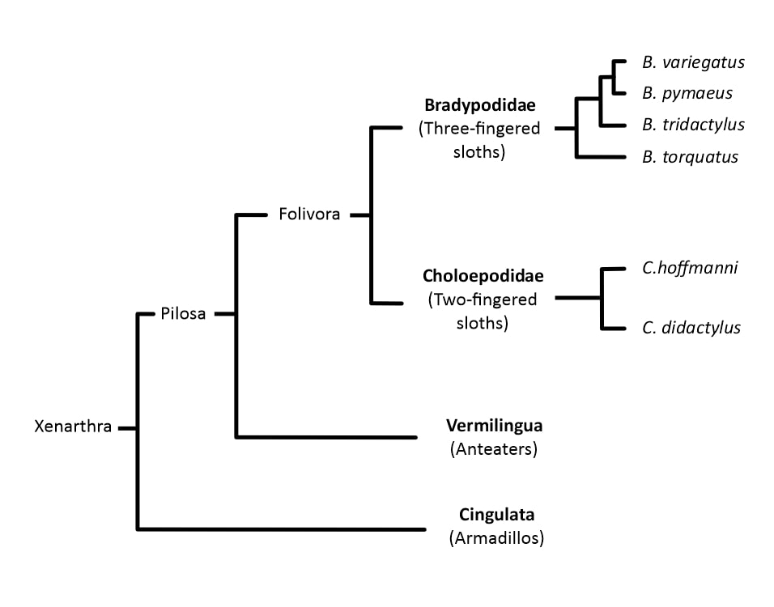

A three-toed sloth in a mangrove in Costa Rica | Copyright http://www.shaterstoke.com
Sloths are unique and fascinating creatures who somehow survived as slow and tree-bearing creatures. Creatures where half of the population die in attempting to climb down from trees to use the bathroom. An odd circumstance when their ancestors were water swimming, ground burrowing, mountain climbing species who populated the whole of North and South America. The last two surviving sloths, the two and three-toed sloths, are distant cousins of 30 million years. But how did two such similar animals evolve separately to look almost identical, and what happened to their powerful ancestors?
Sloths are part of a larger mammal group called Xenarthra, which included animals such as Armadillos and Anteaters. However, the issue of placing where Xenarthra themselves are classified in the wider Mammalia classification is still highly debated. Regardless of which group it will fall into, one thing that is understood is that Xenarthras are long-related cousins of mammals. Further, they are classified as Pilosa and Cingulata, where sloths fall under the Folivora family of Pilosas. Currently, there are two types of sloths, the Bradypodidae ( Three-toed sloths) and Chloropidae (Two-toed sloths) with multiple species under them.
First, we have to understand how sloths were able to coexist in one common area. Commonly, different species of the same herbivore rarely live in the same region, as the competition for food and resources would make it harder to survive. However, it is common knowledge that sloths of different species lived together without over-competing each other to extinction. (PBS Eons). This was because of two reasons;
Sloths have a distinct nature of having low basal metabolism, meaning they barely lose any energy when they aren’t doing anything. This helped ancient sloths preserve energy and limit their chances of competing for food with each other.
Similar to the modern ones, ancient sloths had complex stomachs with 4 chambers. Such a stomach made it easy to digest harder and more durable materials, meaning they could easily eat almost anything edible. Furthermore, their teeth never stopped growing, meaning they could never run out of the surface to use to take and chew down the harder materials. This wider range of accessible food options made it so sloths did not compete with other herbivores or other sloths.
These two features made it so that ancient sloths could adapt and survive in any environment if there is food and safety. This combination made it so that sloths survived in the most bizarre of environments. Some of these bizarre examples are;
This rock-climbing sloth lived up higher in the Peruvian mountains. The fact they could eat anything they could find meant some sloths went up higher and climbed further into the mountains. Their big and sharp claws made it easy to tackle larger climbs, and these devil beasts lived in caves.
This hole-dwelling sloth utilized their claws to dominate the land. They were creatures who dug long and huge burrows with their claws and lived within dense forestry. It is assumed that the existence of food on larger and taller trees allowed these sloths to grow to their size – comparable to elephants and adult human beings. In most cases, a larger body size for herbivores meant becoming easy prey. Yet, for these giant sloths, it did not matter. They did not have any comparable predators, meaning their size did not matter. Allowing them to grow without any risk of becoming it disadvantaging them. *Image credit Michael Long, link in bibliography*
Living near the Peruvian coast, it was a creature that lived on land yet went underwater for food. 8 million years ago, the coast of Peru was a hot desert, and out of the need for food, these sloths went underwater. They mainly ate seaweed, water-based plants, and some coastal, but limited, plants. *Image Credit: Roman Uchytel/Science Photo Library. Link in bibliography*
Currently, two primary families of sloths exist – the two-toed and three-toed sloths. Surprisingly, these two species of sloths had their oldest common ancestor 30 million years ago. Implying that two families of sloths separately evolved similarly with almost identical adaptations. The main theory on how stems from Thalassoocnuses and the Diabolotheriums. Both families of sloths evolved a unique set of claws and body functions that are advantageous for swimming and climbing, respectively, but also these features were ideal for climbing trees. It is assumed that, as North and South America got dense with trees, these sloths chose to climb and stay there. This choice to change terrain was helpful, as in a dense forest being higher would mean a safer position from predatory. Furthermore, it meant that they should not use much energy to find food – as they could live off the dense jungle ceiling of branches and leaves.
Black, Riley. “The Sloth’s Evolutionary Secrete”. National Geographic, Science, 4th January 2012,
https://www.nationalgeographic.com/science/article/the-sloths-evolutionary-secretBlack, Riley. “Sloths in Water”. Hakka Magazine, 11th March 2019,
https://hakaimagazine.com/news/sloths-in-the-water/Gray, Richard. “Sloths: how did two different animals wind up looking so similar?”, Horizon: The EU Research and Innovation Magazine, 12 March 2019,
https://ec.europa.eu/research-and-innovation/en/horizon-magazine/sloths-how-did-two-different-animals-wind-looking-so-similar“How Sloths Went From the Seas to the Trees”, YouTube. Uploaded by ‘PBS EoNS’. 29th of November 2019
https://youtu.be/pt9tBtQoAHoLerner, Louise. “Study Shakes up sloth family tree”. Uchicago News, 6th June 2019,
https://news.uchicago.edu/story/study-shakes-sloth-family-treeLong, Michael. “Megatherium.” Fineartamerica, 7th October 2018,
https://fineartamerica.com/featured/megatherium-michael-longscience-photo-library.htmlLuciano Varela, P Sebastián Tambusso, H Gregory McDonald, Richard A Fariña, “Phylogeny, Macroevolutionary Trends and Historical Biogeography of Sloths: Insights From a Bayesian Morphological Clock Analysis”, Systematic Biology, Volume 68, Issue 2, March 2019, Pages 204–218,
https://doi.org/10.1093/sysbio/syy058“Three-Toed Sloth”, WWF,
https://www.worldwildlife.org/species/sloth“The Evolution of the Sloth”, Youtube. Uploaded by AnimalOrgin. 8th of March 2022.
https://youtu.be/oOsUxiYJbi0“Two-Toed Sloth”, San Diego Zoo Wildlife Alliance; Animals and Plans,
https://animals.sandiegozoo.org/animals/two-toed-sloth